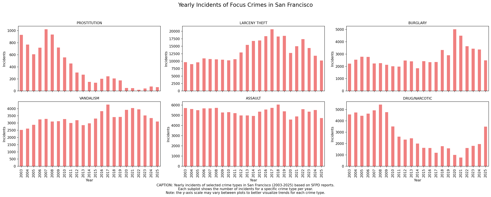
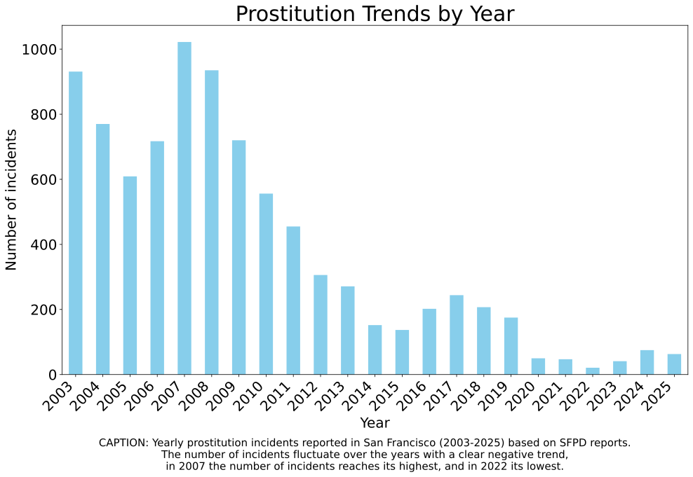

Prostitution in San Francisco - A Data Story
This project explores crime patterns in San Francisco, with a focus on prostitution-related incidents. Using data from 2003 to 2025, we analyze when and where these crimes occur, uncovering temporal and spatial trends.
Crime levels have changed over time, reflecting broader social and economic shifts.

Looking at the full timeline from 2003 to 2025, the graph shows that prostitution-related incidents remain relatively stable in the early years, followed by a sharp and sustained decline beginning around 2007 and continuing through roughly 2015. After this period, the trend appears to level off at a significantly lower level, with only minor fluctuations in recent years.
The key insight is that this drop is unlikely to reflect a sudden behavioral change. Instead, it coincides closely with a shift in policy and public discourse. Around 2008, Proposition K brought the issue of decriminalization into the spotlight. Although it did not pass, it triggered widespread debate and signaled a broader reconsideration of how prostitution should be addressed.
More importantly, the implementation of recommendations from the Task Force on Prostitution marked a gradual transition in enforcement priorities. Authorities increasingly moved away from criminalization and toward approaches centered on public health and quality of life. This likely led to fewer arrests and, consequently, fewer recorded incidents.
Therefore, the graph should be interpreted as showing a policy-driven decline in recorded cases, rather than a true reduction in prostitution activity. The stabilization after 2015 further supports this interpretation, suggesting a “new normal” shaped by changed enforcement practices rather than continued behavioral shifts.

The decline aligns with policy changes, including discussions around Proposition K (2008) and recommendations from the Task Force on Prostitution. The reduction in recorded incidents reflects a shift in enforcement practices rather than a decrease in prostitution activity.
Crime is not evenly distributed across the city. Some districts show higher concentrations for specific crime types.
Figure: Relative crime intensity across districts
The heatmap highlights the Mission District as a clear outlier, showing a noticeably higher relative risk for prostitution-related offenses compared to other districts. This concentration aligns with the neighborhood’s historical context: during the dot-com boom, gentrification and displacement altered the socio-economic fabric, leaving some long-term residents with limited economic opportunities. The Mission’s dense urban environment, combined with local policing patterns, appears to contribute to the spatial clustering of sex-work-related activity in this district.
By quantifying these patterns, our analysis demonstrates how prostitution offenses are not evenly distributed across the city. Instead, they tend to concentrate in areas where social vulnerability intersects with urban density and economic pressures. Understanding these patterns is essential for designing targeted, evidence-based interventions that address the underlying socio-economic factors rather than relying solely on enforcement.